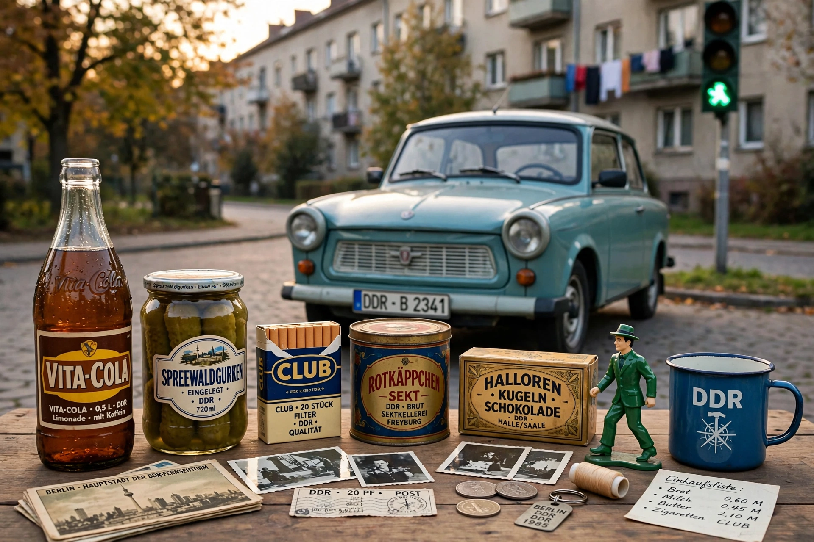

Ostalgie is nostalgia in the former East Germany for aspects of life under the German Democratic Republic — job security, social solidarity, and everyday products that vanished after reunification in 1990.
Revived brands (Vita-Cola, Rotkäppchen), the cult of the Trabant, the Ampelmännchen pedestrian symbol, GDR museums, and Ostalgie parties celebrate socialist-era design. The film Good Bye, Lenin! (2003) dramatised the phenomenon.
Scholars distinguish reflective nostalgia for one's biography from endorsement of the Stasi dictatorship; critics warn of whitewashing repression, while others link Ostalgie to eastern identity and discontent with post-unification economic disruption.